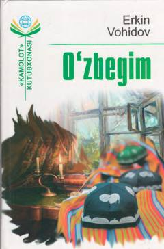

OErkin Vohidovning sara she'r va dostonlari jamlangan to'plam.
Ushbu to'plam O'zbekiston xalq shoiri va qahramoni Erkin Vohidovning mashhur she'rlari, dostonlari, hajviyalari, muxammaslari hamda tarjimalarini o'z ichiga oladi. Kitobdan o'rin olgan asarlar o'zbek adabiyotining durdonalari bo'lib, xalqimizning tarixi, madaniyati va milliy ruhini tarannum etadi.